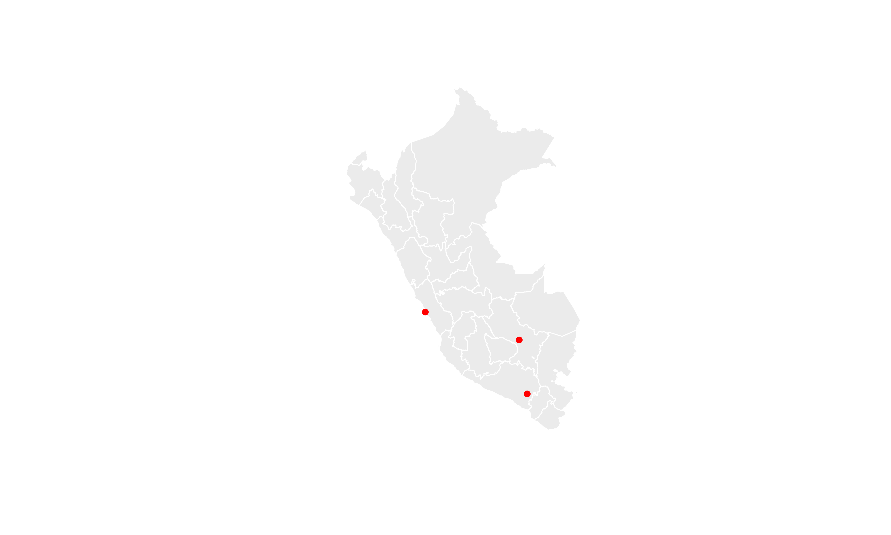
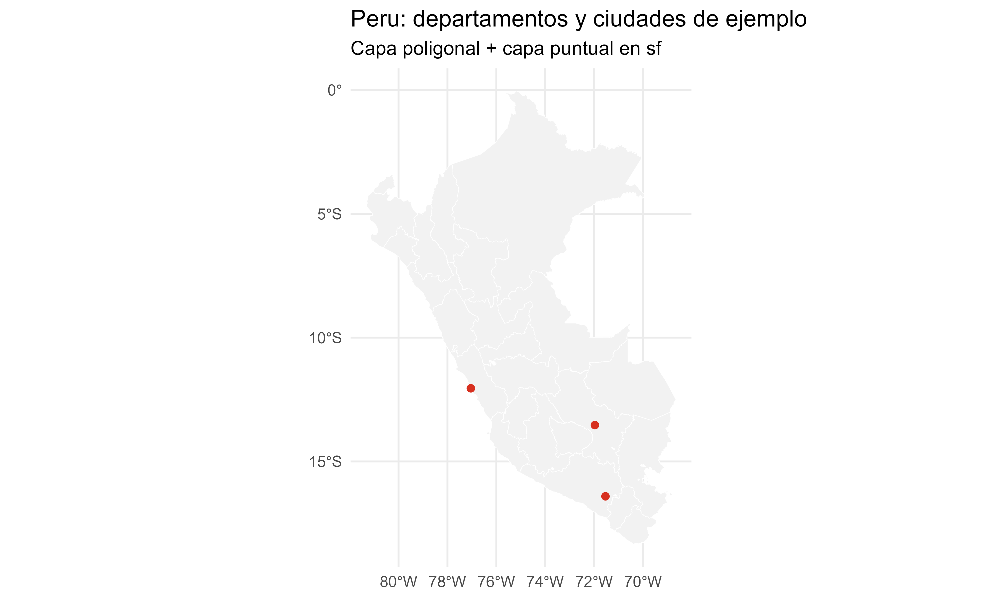

Sesión 6: Introducción a la manipulación de datos espaciales con sf
sf y por que se usa para datos vectorialessfg / sfc / sfdplyr + sfEsta sesion adapta conceptos introductorios de:
sf y datos vectoriales)Simple feature collection with 25 features and 6 fields
Geometry type: MULTIPOLYGON
Dimension: XY
Bounding box: xmin: -81.32823 ymin: -18.35093 xmax: -68.65228 ymax: -0.03860597
Geodetic CRS: WGS 84
# A tibble: 25 × 7
objectid ccdd nombdep fuente periodo fec_reg
<int> <chr> <chr> <chr> <int> <dttm>
1 1 01 AMAZONAS V Censo Nacional Eco… 1 2022-07-13 17:13:57
2 2 02 ANCASH V Censo Nacional Eco… 1 2022-07-13 17:13:57
3 3 03 APURIMAC V Censo Nacional Eco… 1 2022-07-13 17:13:57
4 4 04 AREQUIPA V Censo Nacional Eco… 1 2022-07-13 17:13:57
5 5 05 AYACUCHO V Censo Nacional Eco… 1 2022-07-13 17:13:57
6 6 06 CAJAMARCA V Censo Nacional Eco… 1 2022-07-13 17:13:57
7 7 07 CALLAO V Censo Nacional Eco… 1 2022-07-13 17:13:57
8 8 08 CUSCO V Censo Nacional Eco… 1 2022-07-13 17:13:57
9 9 09 HUANCAVELICA V Censo Nacional Eco… 1 2022-07-13 17:13:57
10 10 10 HUANUCO V Censo Nacional Eco… 1 2022-07-13 17:13:57
# ℹ 15 more rows
# ℹ 1 more variable: geom <MULTIPOLYGON [°]>Note
Un objeto sf es una tabla con atributos + una columna de geometria.
Coordinate Reference System:
User input: WGS 84
wkt:
GEOGCRS["WGS 84",
ENSEMBLE["World Geodetic System 1984 ensemble",
MEMBER["World Geodetic System 1984 (Transit)"],
MEMBER["World Geodetic System 1984 (G730)"],
MEMBER["World Geodetic System 1984 (G873)"],
MEMBER["World Geodetic System 1984 (G1150)"],
MEMBER["World Geodetic System 1984 (G1674)"],
MEMBER["World Geodetic System 1984 (G1762)"],
MEMBER["World Geodetic System 1984 (G2139)"],
MEMBER["World Geodetic System 1984 (G2296)"],
ELLIPSOID["WGS 84",6378137,298.257223563,
LENGTHUNIT["metre",1]],
ENSEMBLEACCURACY[2.0]],
PRIMEM["Greenwich",0,
ANGLEUNIT["degree",0.0174532925199433]],
CS[ellipsoidal,2],
AXIS["geodetic latitude (Lat)",north,
ORDER[1],
ANGLEUNIT["degree",0.0174532925199433]],
AXIS["geodetic longitude (Lon)",east,
ORDER[2],
ANGLEUNIT["degree",0.0174532925199433]],
USAGE[
SCOPE["Horizontal component of 3D system."],
AREA["World."],
BBOX[-90,-180,90,180]],
ID["EPSG",4326]]sfg: una geometria individual (ej. un POINT)sfc: una coleccion de geometrias con CRSsf: data frame + columna geometryciudades <- tibble(
ciudad = c("Lima", "Cusco", "Arequipa"),
lon = c(-77.0428, -71.9675, -71.5350),
lat = c(-12.0464, -13.5319, -16.4090)
)
ciudades_sf <- st_as_sf(ciudades, coords = c("lon", "lat"), crs = 4326)
ciudades_sf <- st_transform(ciudades_sf, st_crs(departamentos))
ciudades_sfSimple feature collection with 3 features and 1 field
Geometry type: POINT
Dimension: XY
Bounding box: xmin: -77.0428 ymin: -16.409 xmax: -71.535 ymax: -12.0464
Geodetic CRS: WGS 84
# A tibble: 3 × 2
ciudad geometry
* <chr> <POINT [°]>
1 Lima (-77.0428 -12.0464)
2 Cusco (-71.9675 -13.5319)
3 Arequipa (-71.535 -16.409)
Simple feature collection with 5 features and 2 fields
Geometry type: MULTIPOLYGON
Dimension: XY
Bounding box: xmin: -78.71229 ymin: -17.28501 xmax: -70.80408 ymax: -2.986125
Geodetic CRS: WGS 84
# A tibble: 5 × 3
ccdd nombdep geom
<chr> <chr> <MULTIPOLYGON [°]>
1 01 AMAZONAS (((-77.81399 -2.992779, -77.81332 -2.990943, -77.81211 -2.9896…
2 02 ANCASH (((-77.64697 -8.05086, -77.64716 -8.05028, -77.64735 -8.04984,…
3 03 APURIMAC (((-73.74655 -13.17442, -73.74744 -13.17352, -73.74744 -13.173…
4 04 AREQUIPA (((-71.98109 -14.64062, -71.98142 -14.63941, -71.9815 -14.6387…
5 05 AYACUCHO (((-74.34843 -12.17503, -74.3484 -12.17502, -74.34714 -12.1743…Simple feature collection with 3 features and 6 fields
Geometry type: MULTIPOLYGON
Dimension: XY
Bounding box: xmin: -77.88631 ymin: -17.28501 xmax: -70.34507 ymax: -10.27419
Geodetic CRS: WGS 84
# A tibble: 3 × 7
objectid ccdd nombdep fuente periodo fec_reg
<int> <chr> <chr> <chr> <int> <dttm>
1 4 04 AREQUIPA V Censo Nacional Economico 1 2022-07-13 17:13:57
2 8 08 CUSCO V Censo Nacional Economico 1 2022-07-13 17:13:57
3 15 15 LIMA V Censo Nacional Economico 1 2022-07-13 17:13:57
# ℹ 1 more variable: geom <MULTIPOLYGON [°]>depto_area <- departamentos |>
mutate(area_m2 = st_area(geom),
area_km2 = as.numeric(area_m2) / 1e6) |>
select(ccdd, nombdep, area_km2)
depto_area |> slice_head(n = 5)Simple feature collection with 5 features and 3 fields
Geometry type: MULTIPOLYGON
Dimension: XY
Bounding box: xmin: -78.71229 ymin: -17.28501 xmax: -70.80408 ymax: -2.986125
Geodetic CRS: WGS 84
# A tibble: 5 × 4
ccdd nombdep area_km2 geom
<chr> <chr> <dbl> <MULTIPOLYGON [°]>
1 01 AMAZONAS 39442. (((-77.81399 -2.992779, -77.81332 -2.990943, -77.8121…
2 02 ANCASH 36038. (((-77.64697 -8.05086, -77.64716 -8.05028, -77.64735 …
3 03 APURIMAC 21183. (((-73.74655 -13.17442, -73.74744 -13.17352, -73.7474…
4 04 AREQUIPA 63398. (((-71.98109 -14.64062, -71.98142 -14.63941, -71.9815…
5 05 AYACUCHO 43692. (((-74.34843 -12.17503, -74.3484 -12.17502, -74.34714…Tip
st_area() devuelve unidades. Conviene convertir explicitamente cuando quieras operar o exportar.
Coordinate Reference System:
User input: WGS 84
wkt:
GEOGCRS["WGS 84",
ENSEMBLE["World Geodetic System 1984 ensemble",
MEMBER["World Geodetic System 1984 (Transit)"],
MEMBER["World Geodetic System 1984 (G730)"],
MEMBER["World Geodetic System 1984 (G873)"],
MEMBER["World Geodetic System 1984 (G1150)"],
MEMBER["World Geodetic System 1984 (G1674)"],
MEMBER["World Geodetic System 1984 (G1762)"],
MEMBER["World Geodetic System 1984 (G2139)"],
MEMBER["World Geodetic System 1984 (G2296)"],
ELLIPSOID["WGS 84",6378137,298.257223563,
LENGTHUNIT["metre",1]],
ENSEMBLEACCURACY[2.0]],
PRIMEM["Greenwich",0,
ANGLEUNIT["degree",0.0174532925199433]],
CS[ellipsoidal,2],
AXIS["geodetic latitude (Lat)",north,
ORDER[1],
ANGLEUNIT["degree",0.0174532925199433]],
AXIS["geodetic longitude (Lon)",east,
ORDER[2],
ANGLEUNIT["degree",0.0174532925199433]],
USAGE[
SCOPE["Horizontal component of 3D system."],
AREA["World."],
BBOX[-90,-180,90,180]],
ID["EPSG",4326]]departamentos_utm18s <- st_transform(departamentos, 32718)
departamentos_utm18s |>
mutate(area_km2_utm = as.numeric(st_area(geom)) / 1e6) |>
select(nombdep, area_km2_utm) |>
slice_head(n = 5)Simple feature collection with 5 features and 2 fields
Geometry type: MULTIPOLYGON
Dimension: XY
Bounding box: xmin: 88445.42 ymin: 8085517 xmax: 949149.6 ymax: 9669542
Projected CRS: WGS 84 / UTM zone 18S
# A tibble: 5 × 3
nombdep area_km2_utm geom
<chr> <dbl> <MULTIPOLYGON [m]>
1 AMAZONAS 39351. (((187171.7 9668804, 187245.8 9669007, 187380.3 9669154…
2 ANCASH 35940. (((208241.9 9109135, 208220.6 9109199, 208198.9 9109248…
3 APURIMAC 21114. (((635840.1 8543237, 635744.1 8543337, 635744 8543337, …
4 AREQUIPA 63258. (((825222.8 8379255, 825189.2 8379389, 825182 8379469, …
5 AYACUCHO 43510. (((570884.8 8654006, 570887.5 8654008, 571025.4 8654077…Warning
Para distancias y areas, evita usar coordenadas geograficas sin proyectar.
ciudades_deptos <- st_join(
ciudades_sf,
departamentos |> select(ccdd, nombdep, geom),
join = st_within,
left = FALSE
)
ciudades_deptos |> select(ciudad, nombdep)Simple feature collection with 3 features and 2 fields
Geometry type: POINT
Dimension: XY
Bounding box: xmin: -77.0428 ymin: -16.409 xmax: -71.535 ymax: -12.0464
Geodetic CRS: WGS 84
# A tibble: 3 × 3
ciudad nombdep geometry
<chr> <chr> <POINT [°]>
1 Lima LIMA (-77.0428 -12.0464)
2 Cusco CUSCO (-71.9675 -13.5319)
3 Arequipa AREQUIPA (-71.535 -16.409)
sf integra geometrias y atributos en una sola estructuradplyr casi igual que un tibblest_join() habilita analisis entre capas (punto, linea, poligono)st_is_valid() y st_make_valid().st_intersection(), st_buffer() y st_union().geom_sf(aes(fill = ...)).Paul Efren Santos Andrade // Introducción a R - Tidyverse